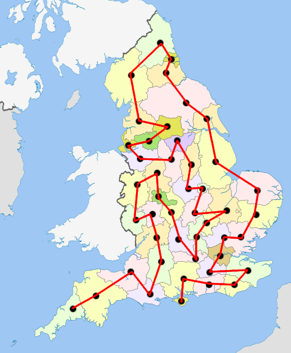

Exam 3 - 01 - Graphs and Graph Models
What is a graph?

Euler and Hamiltonian paths describe the ways to traverse a graph from one vertex to another along its edges. In a graph where it shows a roadmap of a network or relationship of connected cities, finding the ideal way to traverse each road to or from each city could be done using these graph analyses of Euler and Hamiltonian paths. These paths provide insights into better alternatives or routes to cities or computer networks alike. Understanding the theorems of both Euler and Hamiltonian above will help us understand how to properly optimize ways of traveling from one vertex to another.
Used in:
- Network Routing
- Graph Theory Algorithms
- Robotics and Path Planning
- Google Maps and other related map apps
- Game development
Example 3.2.1 : Google Maps - A simple application of Eulerian path.
Example 3.2.2 : Google Earth - A simple Hamiltonian path for all cities of Great Britain.
Euler and Hamiltonian paths help us understand from a traveling perspective as to where is the ideal path to reach all vertices or edges towards our destination. Unlike the previous topic of simply describing the types and kinds of graphs, this explains how to make use of such graphs to create inferences as to what is the ideal approach to a certain problem we need to answer in relation to the given graph. Understanding this lesson was relatively easy as the first part of Exam 3 which elaborated graph models and types. With a bit of practice and memorization of the theorems given, I could say that I have confidently fully understood Eulerian and Hamiltonian paths. The next and last topic of finding the shortest path has also the same difficulty as this topic, except for the application of Dijkstra’s Algorithm.
What is a graph?

Finding shortest paths
King Igmedio Nicolai N. Behimino
(Shortcut: King N. Behimino)